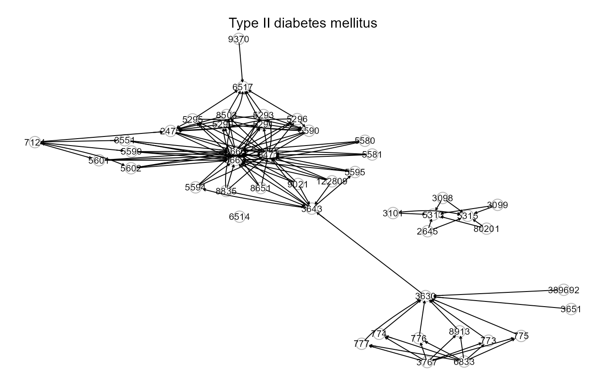

KEGG pathways extracted using the ROntoTools
R package (update: November, 2021).
kegg.pathways"kegg.pathways" is a list of 225 igraph objects corresponding to the KEGG pathways.
Kanehisa M, Goto S (1999). KEGG: kyoto encyclopedia of genes and genomes. Nucleic Acid Research 28(1): 27-30. <https://doi.org/10.1093/nar/27.1.29>
Calin Voichita, Sahar Ansari and Sorin Draghici (2021). ROntoTools: R Onto-Tools suite. R package version 2.20.0.
# \donttest{
library(igraph)
# KEGG pathways
names(kegg.pathways)
#> [1] "EGFR tyrosine kinase inhibitor resistance"
#> [2] "Endocrine resistance"
#> [3] "Antifolate resistance"
#> [4] "Platinum drug resistance"
#> [5] "mRNA surveillance pathway"
#> [6] "RNA degradation"
#> [7] "PPAR signaling pathway"
#> [8] "Homologous recombination"
#> [9] "Fanconi anemia pathway"
#> [10] "MAPK signaling pathway"
#> [11] "ErbB signaling pathway"
#> [12] "Ras signaling pathway"
#> [13] "Rap1 signaling pathway"
#> [14] "Calcium signaling pathway"
#> [15] "cGMP-PKG signaling pathway"
#> [16] "cAMP signaling pathway"
#> [17] "Cytokine-cytokine receptor interaction"
#> [18] "Viral protein interaction with cytokine and cytokine receptor"
#> [19] "Chemokine signaling pathway"
#> [20] "NF-kappa B signaling pathway"
#> [21] "HIF-1 signaling pathway"
#> [22] "FoxO signaling pathway"
#> [23] "Sphingolipid signaling pathway"
#> [24] "Phospholipase D signaling pathway"
#> [25] "Neuroactive ligand-receptor interaction"
#> [26] "Cell cycle"
#> [27] "Oocyte meiosis"
#> [28] "p53 signaling pathway"
#> [29] "Sulfur relay system"
#> [30] "SNARE interactions in vesicular transport"
#> [31] "Autophagy - other"
#> [32] "Mitophagy - animal"
#> [33] "Autophagy - animal"
#> [34] "Protein processing in endoplasmic reticulum"
#> [35] "Endocytosis"
#> [36] "Phagosome"
#> [37] "Peroxisome"
#> [38] "mTOR signaling pathway"
#> [39] "PI3K-Akt signaling pathway"
#> [40] "AMPK signaling pathway"
#> [41] "Apoptosis"
#> [42] "Longevity regulating pathway"
#> [43] "Longevity regulating pathway - multiple species"
#> [44] "Apoptosis - multiple species"
#> [45] "Ferroptosis"
#> [46] "Necroptosis"
#> [47] "Cellular senescence"
#> [48] "Cardiac muscle contraction"
#> [49] "Adrenergic signaling in cardiomyocytes"
#> [50] "Vascular smooth muscle contraction"
#> [51] "Wnt signaling pathway"
#> [52] "Notch signaling pathway"
#> [53] "Hedgehog signaling pathway"
#> [54] "TGF-beta signaling pathway"
#> [55] "Axon guidance"
#> [56] "VEGF signaling pathway"
#> [57] "Apelin signaling pathway"
#> [58] "Osteoclast differentiation"
#> [59] "Hippo signaling pathway"
#> [60] "Hippo signaling pathway - multiple species"
#> [61] "Focal adhesion"
#> [62] "ECM-receptor interaction"
#> [63] "Cell adhesion molecules"
#> [64] "Adherens junction"
#> [65] "Tight junction"
#> [66] "Gap junction"
#> [67] "Signaling pathways regulating pluripotency of stem cells"
#> [68] "Complement and coagulation cascades"
#> [69] "Platelet activation"
#> [70] "Antigen processing and presentation"
#> [71] "Neutrophil extracellular trap formation"
#> [72] "Toll-like receptor signaling pathway"
#> [73] "NOD-like receptor signaling pathway"
#> [74] "RIG-I-like receptor signaling pathway"
#> [75] "Cytosolic DNA-sensing pathway"
#> [76] "C-type lectin receptor signaling pathway"
#> [77] "JAK-STAT signaling pathway"
#> [78] "Natural killer cell mediated cytotoxicity"
#> [79] "IL-17 signaling pathway"
#> [80] "Th1 and Th2 cell differentiation"
#> [81] "Th17 cell differentiation"
#> [82] "T cell receptor signaling pathway"
#> [83] "B cell receptor signaling pathway"
#> [84] "Fc epsilon RI signaling pathway"
#> [85] "Fc gamma R-mediated phagocytosis"
#> [86] "TNF signaling pathway"
#> [87] "Leukocyte transendothelial migration"
#> [88] "Intestinal immune network for IgA production"
#> [89] "Circadian rhythm"
#> [90] "Circadian entrainment"
#> [91] "Thermogenesis"
#> [92] "Long-term potentiation"
#> [93] "Synaptic vesicle cycle"
#> [94] "Neurotrophin signaling pathway"
#> [95] "Retrograde endocannabinoid signaling"
#> [96] "Glutamatergic synapse"
#> [97] "Cholinergic synapse"
#> [98] "Serotonergic synapse"
#> [99] "GABAergic synapse"
#> [100] "Dopaminergic synapse"
#> [101] "Long-term depression"
#> [102] "Olfactory transduction"
#> [103] "Taste transduction"
#> [104] "Phototransduction"
#> [105] "Inflammatory mediator regulation of TRP channels"
#> [106] "Regulation of actin cytoskeleton"
#> [107] "Insulin signaling pathway"
#> [108] "Insulin secretion"
#> [109] "GnRH signaling pathway"
#> [110] "Ovarian steroidogenesis"
#> [111] "Progesterone-mediated oocyte maturation"
#> [112] "Estrogen signaling pathway"
#> [113] "Melanogenesis"
#> [114] "Prolactin signaling pathway"
#> [115] "Thyroid hormone synthesis"
#> [116] "Thyroid hormone signaling pathway"
#> [117] "Adipocytokine signaling pathway"
#> [118] "Oxytocin signaling pathway"
#> [119] "Glucagon signaling pathway"
#> [120] "Regulation of lipolysis in adipocytes"
#> [121] "Renin secretion"
#> [122] "Aldosterone synthesis and secretion"
#> [123] "Relaxin signaling pathway"
#> [124] "Cortisol synthesis and secretion"
#> [125] "Parathyroid hormone synthesis, secretion and action"
#> [126] "GnRH secretion"
#> [127] "Type II diabetes mellitus"
#> [128] "Insulin resistance"
#> [129] "Non-alcoholic fatty liver disease"
#> [130] "AGE-RAGE signaling pathway in diabetic complications"
#> [131] "Cushing syndrome"
#> [132] "Growth hormone synthesis, secretion and action"
#> [133] "Alcoholic liver disease"
#> [134] "Type I diabetes mellitus"
#> [135] "Maturity onset diabetes of the young"
#> [136] "Aldosterone-regulated sodium reabsorption"
#> [137] "Endocrine and other factor-regulated calcium reabsorption"
#> [138] "Vasopressin-regulated water reabsorption"
#> [139] "Salivary secretion"
#> [140] "Gastric acid secretion"
#> [141] "Pancreatic secretion"
#> [142] "Carbohydrate digestion and absorption"
#> [143] "Bile secretion"
#> [144] "Mineral absorption"
#> [145] "Cholesterol metabolism"
#> [146] "Alzheimer disease"
#> [147] "Parkinson disease"
#> [148] "Amyotrophic lateral sclerosis"
#> [149] "Huntington disease"
#> [150] "Spinocerebellar ataxia"
#> [151] "Prion disease"
#> [152] "Pathways of neurodegeneration - multiple diseases"
#> [153] "Cocaine addiction"
#> [154] "Amphetamine addiction"
#> [155] "Morphine addiction"
#> [156] "Alcoholism"
#> [157] "Bacterial invasion of epithelial cells"
#> [158] "Vibrio cholerae infection"
#> [159] "Epithelial cell signaling in Helicobacter pylori infection"
#> [160] "Pathogenic Escherichia coli infection"
#> [161] "Shigellosis"
#> [162] "Salmonella infection"
#> [163] "Pertussis"
#> [164] "Legionellosis"
#> [165] "Yersinia infection"
#> [166] "Leishmaniasis"
#> [167] "Chagas disease"
#> [168] "African trypanosomiasis"
#> [169] "Malaria"
#> [170] "Toxoplasmosis"
#> [171] "Amoebiasis"
#> [172] "Staphylococcus aureus infection"
#> [173] "Tuberculosis"
#> [174] "Hepatitis C"
#> [175] "Hepatitis B"
#> [176] "Measles"
#> [177] "Human cytomegalovirus infection"
#> [178] "Influenza A"
#> [179] "Human papillomavirus infection"
#> [180] "Human T-cell leukemia virus 1 infection"
#> [181] "Kaposi sarcoma-associated herpesvirus infection"
#> [182] "Herpes simplex virus 1 infection"
#> [183] "Epstein-Barr virus infection"
#> [184] "Human immunodeficiency virus 1 infection"
#> [185] "Coronavirus disease - COVID-19"
#> [186] "Pathways in cancer"
#> [187] "Transcriptional misregulation in cancer"
#> [188] "Viral carcinogenesis"
#> [189] "Proteoglycans in cancer"
#> [190] "MicroRNAs in cancer"
#> [191] "Chemical carcinogenesis - receptor activation"
#> [192] "Colorectal cancer"
#> [193] "Renal cell carcinoma"
#> [194] "Pancreatic cancer"
#> [195] "Endometrial cancer"
#> [196] "Glioma"
#> [197] "Prostate cancer"
#> [198] "Thyroid cancer"
#> [199] "Basal cell carcinoma"
#> [200] "Melanoma"
#> [201] "Bladder cancer"
#> [202] "Chronic myeloid leukemia"
#> [203] "Acute myeloid leukemia"
#> [204] "Small cell lung cancer"
#> [205] "Non-small cell lung cancer"
#> [206] "Breast cancer"
#> [207] "Hepatocellular carcinoma"
#> [208] "Gastric cancer"
#> [209] "Central carbon metabolism in cancer"
#> [210] "Choline metabolism in cancer"
#> [211] "PD-L1 expression and PD-1 checkpoint pathway in cancer"
#> [212] "Asthma"
#> [213] "Autoimmune thyroid disease"
#> [214] "Inflammatory bowel disease"
#> [215] "Systemic lupus erythematosus"
#> [216] "Rheumatoid arthritis"
#> [217] "Allograft rejection"
#> [218] "Graft-versus-host disease"
#> [219] "Hypertrophic cardiomyopathy"
#> [220] "Arrhythmogenic right ventricular cardiomyopathy"
#> [221] "Dilated cardiomyopathy"
#> [222] "Diabetic cardiomyopathy"
#> [223] "Viral myocarditis"
#> [224] "Lipid and atherosclerosis"
#> [225] "Fluid shear stress and atherosclerosis"
i<-which(names(kegg.pathways)=="Type II diabetes mellitus");i
#> [1] 127
ig<- kegg.pathways[[i]]
summary(ig)
#> IGRAPH 105832d DNW- 46 124 --
#> + attr: name (v/c), weight (e/n)
V(ig)$name
#> [1] "5313" "5315" "5290" "5291" "5293" "5295" "5296" "8503"
#> [9] "6517" "3667" "3643" "3630" "122809" "8651" "8835" "9021"
#> [17] "5594" "5595" "9370" "3551" "5580" "5581" "3651" "8471"
#> [25] "8660" "5599" "5601" "5602" "5590" "7124" "773" "774"
#> [33] "775" "776" "777" "8913" "2645" "3098" "3099" "3101"
#> [41] "80201" "2475" "389692" "6514" "3767" "6833"
E(ig)$weight
#> [1] 0 0 0 0 0 0 0 0 0 0 0 0 0 0 0 0 0 0 1 1 1 1 1 1 1
#> [26] 1 1 0 0 1 -1 -1 -1 -1 -1 -1 -1 -1 -1 -1 -1 -1 -1 -1 -1 -1 0 0 0 0
#> [51] 0 0 0 -1 -1 -1 -1 -1 -1 -1 -1 -1 1 1 1 1 1 1 1 1 1 1 1 1 1
#> [76] -1 -1 -1 -1 -1 -1 -1 -1 -1 -1 -1 -1 0 0 0 0 0 0 0 0 0 0 0 0 0
#> [101] 0 0 0 0 0 0 0 0 -1 -1 -1 1 0 0 0 0 0 0 0 0 0 0 0 0
gplot(ig, l="fdp", psize=50, main=names(kegg.pathways[i]))

# }